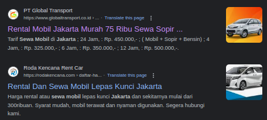
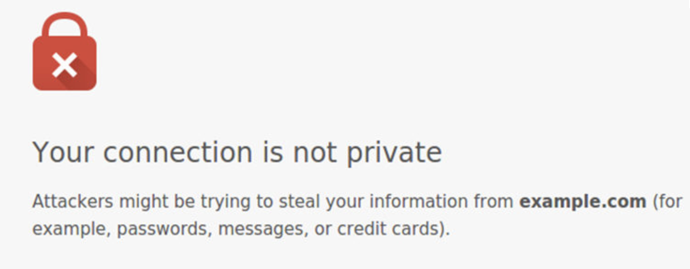
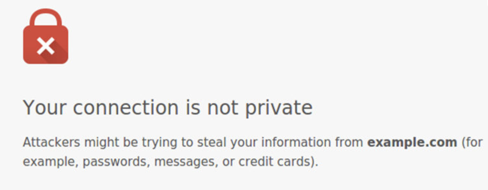

Panduan Singkat SEO & SEM 2024
 Permasalahan yang di hadapi oleh institusi dan pelaku bisnis online saat ini adalah bukannya lagi
apakah mereka memiliki situs web atau media sosial, akan tetapi adalah apakah profile online
mereka mendapatkan traffic atau lalu lintas yang cukup untuk organisasi atau usaha mereka tumbuh
dan berkembang
Permasalahan yang di hadapi oleh institusi dan pelaku bisnis online saat ini adalah bukannya lagi
apakah mereka memiliki situs web atau media sosial, akan tetapi adalah apakah profile online
mereka mendapatkan traffic atau lalu lintas yang cukup untuk organisasi atau usaha mereka tumbuh
dan berkembang Artikel ini akan memberikan Anda panduan bagaimana menyusun SEO dan SEM yang benar untuk Anda mendapatkan banyak lalulintas secara online
SEO (Search engine Optimization) dan SEM (Search Engine Marketing) adalah dua istilah yang berdekatan namun memiliki satu tujuan sama yaitu Visibilitas
Visibilitas profile online Anda bertujuan untuk mendatangkan banyak traffic atau lalu lintas yang di harapkan akan memberi pengaruh positif pada pertumbuhan dan perkembangan organisasi usaha bisnis Anda
Berikut adalah panduan SEO untuk Anda untuk menaikan kunjungan ke profile online Anda
Pengertian Search Engine Optimization - SEO
Google sebagai mesin pencari atau search engine yang paling sering di pakai di dunia ketika seseorang mencari sesuatu di internet , tugas dan tujuan SEO adalah memastikan Visibilitas profile online Anda ketika seseorang mengetikkan "kata kunci" yang berkenaan dengan organisasi, usaha atau bisnis Anda di Internet
Misal saja Anda megetikan di internet dalam hal ini Google dengan kata kunci "Sewa mobil jakarta" maka Anda akan menemukan PT Global Transport dan Roda Kencana Rent Car berada di halaman 1 hasil Pencarian Google

Gambar: Contoh website yang berada di halaman 1 Google
Dengan berada pada halaman 1 hasil pencarian Google, kedua website tersebut berpotensi bisa mendapatkan sampai dengan 100 ribu pencarian per bulan di google menurut Google Keyword Planner
Dengan asumsi Anda mendapatkan hanya 1% konversi saja dari total jumlah minimum pencarian per bulan untuk kata kunci "sewa mobil jakarta" Anda sudah bisa mendapatkan 100 orderan per bulan atau 3 order per hari
Gambar: Jumlah pencarian untuk kata kunci "sewa mobil jakarta" menurut Google Keyword Planner
Februari 2024
Begitulah gambaran keuntungan mengoptimasi profile online Anda dengan SEO,
Namun, mengoptimasi SEO bukanlah hal yang mudah, ada berbagai macam hal yang perlu di lakukan untuk mengeoptimasi SEO :
Website
Untuk dapat tampil di halaman pencarian Google, maka badan, usaha, organisasi, institusi ataupun bisnis perlu untuk memiliki sebuah website
Memiliki website adalah suatu keharusan bila Anda ingin berhasil melakukan SEO, sebab website adalah ibarat alamat di mana bisnis, organisasi, institusi, badan atau usaha Anda bertempat tinggal di Internet, memudahkan pelanggan menemukan Anda ketika mereka membutuhkan solusi dari bisnis untuk memecahkan masalah mereka
Pada saat ini memiliki website tidaklah sesulit dahulu karena sudah ada layanan penyedia website baik yang gratis seperti Wordpress ataupun yang berbayar yang disediakan seperti oleh Niaga Hoster dan Hostinger sesuai dengan kebutuhan jenis website apa yang ingin Anda buat.
Atau Anda dapat menghubungi saya pada menu kontak
Google Search Console (GSC)
Menghubungkan website Anda ke GSC akan memudahkan website Anda tampil di halaman hasil pencarian Google ketika ada calon pelanggan yang mengetikan "kata kunci" tertentu yang berkenaan dengan Anda di Internet
Untuk menghubungkan website Anda ke GSC Anda hanya perlu mengunjungi Google Search Console dan ikuti petunjuk penggunaannya di situs web tersebut: hubungkan situs web Anda ke sana dan pastikan tidak ada warning / peringatan ataupun error yang terjadi pada situs web Anda
TIPS: Konsultasikan Keperluan SEO Anda dengan Web Developer Untuk menghubungkan situs
web Anda dengan Google Search Console
Gambar: Halaman Depan Google Keyword Planner Februari 2024
Gambar: Situs web yang berada pada halaman 1 pencarian Google dengan kata kunci "sewa mobil jakarta"
yang sudah terhubung dengan google search console
Google’s Ranking Factors
Dalam mengoptimasi SEO, Google memiliki 200+ faktor yang digunakan untuk sebuah website dapat masuk ke halaman pertama hasil pencarian (Baca: Google’s 200 Ranking Factors)
Tanpa perlu untuk mengetahui semuanya berikut daftar faktor utama yang harus diperhatikan sebuah website dapat menempati halaman 1 hasil pencarian Google sebagai berikut:
1. Quality Content - Kualitas Konten
2. Keyword Optimization - Optimisasi "Kata Kunci"
3. Social Signals - Sinyal Media Sosial
4. Technical SEO - Teknikal SEO
5. User Experience (UX) - Pengalaman Pengguna
1. Quality Content - Kualitas Konten
Faktor SEO yang paling penting. Google ingin menampilkan konten berkualitas tinggi, informatif, dan
relevan kepada pengguna
Relevansi Konten berkualitas tinggi relevan dengan audiens target Anda dan menjawab kebutuhan, pertanyaan, dan minat mereka
Kesegaran Mesin pencari mengutamakan konten yang segar dan terkini. Memperbarui situs web Anda secara teratur dengan konten berkualitas tinggi dapat membantu meningkatkan kinerja SEO Anda
Keterbacaan - Konten berkualitas mudah dibaca dan dipahami, sehingga dapat diakses oleh khalayak yang lebih luas. Mesin pencari memperhitungkan keterbacaan saat memberi peringkat pada konten, jadi penting untuk menulis dalam format dan ukuran tulisan yang jelas dan mudah di baca
Multimedia - Memasukkan elemen multimedia seperti gambar, video, dan infografis dapat meningkatkan kualitas konten Anda dan meningkatkan keterlibatan pengguna. Mesin pencari sering kali menyukai konten yang memberikan pengalaman pengguna yang kaya
Relevansi Konten berkualitas tinggi relevan dengan audiens target Anda dan menjawab kebutuhan, pertanyaan, dan minat mereka
Kesegaran Mesin pencari mengutamakan konten yang segar dan terkini. Memperbarui situs web Anda secara teratur dengan konten berkualitas tinggi dapat membantu meningkatkan kinerja SEO Anda
Keterbacaan - Konten berkualitas mudah dibaca dan dipahami, sehingga dapat diakses oleh khalayak yang lebih luas. Mesin pencari memperhitungkan keterbacaan saat memberi peringkat pada konten, jadi penting untuk menulis dalam format dan ukuran tulisan yang jelas dan mudah di baca
Multimedia - Memasukkan elemen multimedia seperti gambar, video, dan infografis dapat meningkatkan kualitas konten Anda dan meningkatkan keterlibatan pengguna. Mesin pencari sering kali menyukai konten yang memberikan pengalaman pengguna yang kaya
2. Keyword Optimization - Optimisasi "Kata Kunci"
Konten berkualitas menggabungkan kata kunci yang relevan secara alami ke dalam teks. Ini membantu mesin
pencari memahami isi konten Anda dan meningkatkan peluangnya untuk mendapatkan peringkat untuk kata
kunci tersebut
Dengan memadukan penelitian kata kunci yang cermat dengan pemahaman yang baik tentang maksud pencarian pengguna, Anda dapat mengembangkan strategi SEO yang efektif dan konten yang relevan, yang pada gilirannya dapat meningkatkan visibilitas dan kinerja situs web Anda dalam hasil pencarian
Tools yang dapat digunakan untuk optimasi kata kunci adalah seperti Ahref untuk situs yang berbayar atau kunjungi Google Keyword Planner untuk yang gratis / tidak berbayar
Dalam penelitian kata kunci, Anda mencoba memahami kata kunci yang digunakan oleh pengguna ketika mereka mencari informasi tertentu
Dengan memahami kata kunci yang paling populer atau relevan, Anda dapat mengidentifikasi tren pencarian dan mendapatkan wawasan tentang apa yang sedang dicari oleh audiens Anda
Dengan demikian, penelitian kata kunci dan pemahaman maksud pencarian bekerja bersama-sama untuk membantu Anda menciptakan konten yang relevan dan memenuhi kebutuhan pengguna, meningkatkan peringkat SEO dan memperoleh lalu lintas yang berkualitas
Dengan memadukan penelitian kata kunci yang cermat dengan pemahaman yang baik tentang maksud pencarian pengguna, Anda dapat mengembangkan strategi SEO yang efektif dan konten yang relevan, yang pada gilirannya dapat meningkatkan visibilitas dan kinerja situs web Anda dalam hasil pencarian
Tools yang dapat digunakan untuk optimasi kata kunci adalah seperti Ahref untuk situs yang berbayar atau kunjungi Google Keyword Planner untuk yang gratis / tidak berbayar
Gambar:
Dashboard Halaman Google Keyword Planner untuk melakukan Optimasi dan riset kata kunci
Dashboard Halaman Google Keyword Planner untuk melakukan Optimasi dan riset kata kunci
Dalam penelitian kata kunci, Anda mencoba memahami kata kunci yang digunakan oleh pengguna ketika mereka mencari informasi tertentu
Dengan memahami kata kunci yang paling populer atau relevan, Anda dapat mengidentifikasi tren pencarian dan mendapatkan wawasan tentang apa yang sedang dicari oleh audiens Anda
Dengan demikian, penelitian kata kunci dan pemahaman maksud pencarian bekerja bersama-sama untuk membantu Anda menciptakan konten yang relevan dan memenuhi kebutuhan pengguna, meningkatkan peringkat SEO dan memperoleh lalu lintas yang berkualitas
3. Social Signals - Sinyal Media Sosial
Gambar:
Dashboard Halaman Google Keyword Planner untuk melakukan Optimasi dan riset kata kunci
Dashboard Halaman Google Keyword Planner untuk melakukan Optimasi dan riset kata kunci
Sinyal Media Sosial berkontribusi pada kinerja SEO yang lebih baik dengan meningkatkan visibilitas, mengarahkan lalu lintas, dan meningkatkan kesadaran merek dan keterlibatan
Oleh karena itu, mengintegrasikan media sosial ke dalam strategi SEO secara keseluruhan dapat bermanfaat untuk memaksimalkan kehadiran online Anda dan mencapai audiens yang lebih luas. Beberapa manfaat media sosial untuk SEO adalah :
Peningkatan Visibilitas: - Platform media sosial adalah jaringan besar di mana konten dapat dengan cepat menyebar. Jika konten Anda sering dibagikan, disukai, atau dikomentari, dapat menyebabkan peningkatan visibilitas dan potensial lebih banyak tautan
Kesadaran Merek: - Keterlibatan aktif di media sosial dapat meningkatkan kesadaran dan pengakuan merek. Ketika lebih banyak orang menjadi akrab dengan merek dan konten Anda, mereka mungkin lebih cenderung untuk mencari merek Anda atau kata kunci terkait, yang dapat secara tidak langsung meningkatkan peringkat mesin pencarian Anda
Pembangunan Tautan: - Meskipun berbagi media sosial itu sendiri bukan tautan balik langsung, itu dapat menyebabkan peluang pembangunan tautan alami. Ketika orang melihat dan terlibat dengan konten Anda di media sosial, beberapa mungkin memutuskan untuk menautkannya dari situs web atau blog mereka sendiri, yang dapat memengaruhi SEO Anda secara positif
Bukti Sosial: - Tingkat keterlibatan sosial yang tinggi dapat berfungsi sebagai bukti sosial atas kualitas dan relevansi konten Anda. Ini dapat memengaruhi persepsi orang terhadap merek Anda dan mendorong mereka untuk terlibat dengan konten Anda, membagikannya, atau bahkan menautkannya dari situs web mereka sendiri.
Peningkatan Lalu Lintas: - Media sosial dapat mengarahkan jumlah lalu lintas yang signifikan ke situs web Anda. Peningkatan lalu lintas dapat menyebabkan lebih banyak keterlibatan, waktu tinggal yang lebih lama, dan tingkat pentalan yang lebih rendah, yang semuanya adalah metrik yang dipertimbangkan oleh mesin pencari seperti Google ketika menentukan relevansi dan kualitas halaman web.
TIPS: Konsultasikan Keperluan SEO Anda dengan Web Developer Untuk menghubungkan situs
web Anda dengan Akun Media Sosial Anda
4. Technical SEO - Teknikal SEO
Teknikal SEO adalah unsur yang amat penting dalam search engine Optimization sebab seberapa bagus hal-hal yang Anda lakukan sebelumnya akan menjadi hal yang sia-sia apabila mesin pencari seperti Google tidak meng- index halaman Anda, ketika itu terjadi maka Google tidak akan menampilkanya dalam daftar pencarian dan membuat usaha Anda kehilangan potensinya untuk tumbuh dan berkemnbang
Hal-hal yang perlu dilakukan untuk Technical SEO untuk mengoptimasi SEO situs web Anda antara lain adalah:
HTTPS dan Keamanan
HTTPS dan Keamanan: Menggunakan enkripsi HTTPS tidak hanya memberikan keamanan bagi pengguna Anda tetapi juga memiliki dampak positif pada SEO. Mesin pencari cenderung mendukung situs web yang aman, jadi migrasi ke HTTPS disarankan
Apabila situs web Anda tidak memiliki keamanan SSL dan tidak ber-URL kan HTTPS, kemungkinan besar situs web Anda akan mendapatkan peringatan seperti berikut saat ada yang sedang mengunjingi situ web Anda:

Walaupun harga situs web dengan HTTPS pasti lebih mahal dari situs web yang tidak ber HTTPS akan sangat bijak tetap meilih situs ber HTTPS untuk menjada Anda tidak kehilangan calon pelanggan Anda ketika mengunjungi situs web Anda
Pada tahan ini Anda seharusnya sudah menghubungkan situs web Anda dengan Google Search Console apabila belum Anda dapat mengunjingi situs web Google Search Console dan mengikuti arahan selanjutnya
Langkah berikutnya adalah memastikan halaman situs web Anda berjalan dengan baik tanpa adanya issu warning, error ataupun masalah lainnya dan terlihat tampak sebagai berikut:
Apabila Anda mendapati masalah maka Anda dapat menyelesaikannya dengan mengiukuti panduannya untuk menyelesaikan masalah tersebut yang disediakan oleh google di support.google/webmaster/answer
Membuat struktur situs yang logis dengan navigasi yang jelas membantu mesin pencari memahami hierarki konten Anda. Ini melibatkan mengorganisir konten Anda ke dalam kategori dan subkategori, menggunakan tautan internal secara efektif, dan mengoptimalkan struktur URL
Dengan meningkatnya penggunaan perangkat ponsel dan gadget lainnya, memastikan situs web Anda dioptimalkan untuk perangkat tersebut adalah sangat penting
Sebab 58% pencarian Google adalah menggunakan perangkat ponsel menurut edge of the web dengan mengoptimasi web untuk perangkat ponsel maka Anda tidak perlu taku kehilangan pengunjung situs web Anda
TIPS: Pastikan Anda berkonsultasi dengan web developer Anda dalam melakukan Technical SEO sebab satu saja kesalahan dapat mempengaruhi seluruh situs web Anda yang akan berdampak buruk pada perrforma SEO situs web Anda
Hal-hal yang perlu dilakukan untuk Technical SEO untuk mengoptimasi SEO situs web Anda antara lain adalah:
HTTPS dan Keamanan
HTTPS dan Keamanan: Menggunakan enkripsi HTTPS tidak hanya memberikan keamanan bagi pengguna Anda tetapi juga memiliki dampak positif pada SEO. Mesin pencari cenderung mendukung situs web yang aman, jadi migrasi ke HTTPS disarankan Apabila situs web Anda tidak memiliki keamanan SSL dan tidak ber-URL kan HTTPS, kemungkinan besar situs web Anda akan mendapatkan peringatan seperti berikut saat ada yang sedang mengunjingi situ web Anda:

Gambar: Situs web yang tidak menggunakan HTTPS saat dikunjungi
Walaupun harga situs web dengan HTTPS pasti lebih mahal dari situs web yang tidak ber HTTPS akan sangat bijak tetap meilih situs ber HTTPS untuk menjada Anda tidak kehilangan calon pelanggan Anda ketika mengunjungi situs web Anda
Audit Google Search Console
Pada tahan ini Anda seharusnya sudah menghubungkan situs web Anda dengan Google Search Console apabila belum Anda dapat mengunjingi situs web Google Search Console dan mengikuti arahan selanjutnya
Langkah berikutnya adalah memastikan halaman situs web Anda berjalan dengan baik tanpa adanya issu warning, error ataupun masalah lainnya dan terlihat tampak sebagai berikut:
Gambar: Tampilan google searhc console ketika optimasi SEO Anda berjalan baik tanpa ada masalah
Apabila Anda mendapati masalah maka Anda dapat menyelesaikannya dengan mengiukuti panduannya untuk menyelesaikan masalah tersebut yang disediakan oleh google di support.google/webmaster/answer
Struktur Situs dan Navigasi
Membuat struktur situs yang logis dengan navigasi yang jelas membantu mesin pencari memahami hierarki konten Anda. Ini melibatkan mengorganisir konten Anda ke dalam kategori dan subkategori, menggunakan tautan internal secara efektif, dan mengoptimalkan struktur URL
Gambar: Struktur website yang baik
Gambar: Struktur website yang buruk
Mobile Friendly - Layar Responsive
Dengan meningkatnya penggunaan perangkat ponsel dan gadget lainnya, memastikan situs web Anda dioptimalkan untuk perangkat tersebut adalah sangat penting
Sebab 58% pencarian Google adalah menggunakan perangkat ponsel menurut edge of the web dengan mengoptimasi web untuk perangkat ponsel maka Anda tidak perlu taku kehilangan pengunjung situs web Anda
Search Engine Marketing
a. seacrh engine Optimization (sudah di bahas sebelumnya), dan
b. Search Engine Advertising
Pada dasarnya SEM adalah SEO yang di iklankan (SEO + Advertising)
Google Ads
Google Ads adalah platform periklanan online yang dikembangkan oleh Google, di mana bisnis dapat membuat iklan untuk mencapai audiens target mereka melalui berbagai layanan Google, termasuk pencarian, tampilan, video, dan jaringan aplikasi
Ads ini beroperasi dengan model bayar per klik (PPC), di mana pengiklan menawar kata kunci yang relevan dengan bisnis mereka untuk menampilkan iklan mereka di hasil pencarian Google atau di situs web lain dalam Jaringan Tampilan Google
Dengan Google Ads, pengiklan dapat menetapkan anggaran mereka, menargetkan lokasi geografis tertentu, memilih waktu-waktu tertentu untuk menampilkan iklan mereka, dan melacak kinerja kampanye mereka melalui berbagai metrik seperti klik, impresi, dan konversi
Google Ads menawarkan berbagai format iklan, termasuk iklan teks, iklan tampilan, iklan video, iklan belanja, dan iklan promosi aplikasi, memungkinkan pengiklan untuk menyesuaikan kampanye mereka dengan tujuan dan audiens target mereka
Secara keseluruhan, Google Ads menyediakan platform yang kuat bagi bisnis dari berbagai skala untuk mempromosikan produk atau layanan mereka dan mencapai calon pelanggan secara efektif secara online
Berikut tips beriklan di google ads:
1. Tetapkan Tujuan yang Jelas: Sebelum Anda mulai, tentukan tujuan spesifik untuk kampanye Anda. Apakah Anda ingin meningkatkan penjualan, lalu lintas situs web, atau kesadaran merek? Menetapkan tujuan yang jelas akan membantu Anda merancang kampanye yang lebih efektif
2. Pilih "kata kunci" yang sesuai dengan jenis usaha Anda dan lokasi
3. Lakukan Penelitian Kata Kunci: Lakukan riset kata kunci untuk menemukan kata kunci yang relevan dengan bisnis Anda
4. Membuat Iklan yang Relevan: Pastikan iklan Anda relevan dengan kata kunci yang Anda targetkan. Buat dalam bentuk format landing page, gambar, gif dan video
5. Uji Berbagai Varian Iklan: Buat beberapa varian iklan dan uji mereka untuk melihat mana yang paling efektif. Cobalah berbagai judul, deskripsi, dan panggilan tindakan (CTA) untuk menemukan kombinasi yang paling sukses
6. Lacak dan Analisis Kinerja: Pantau kinerja kampanye Anda secara teratur dan gunakan data untuk membuat perubahan dan optimasi yang diperlukan. Identifikasi iklan yang paling sukses dan alokasikan anggaran Anda secara cerdas
Selain Google Ads beberapa platform lainnya juga seperti Facebook & Instagram, TikTok, LinkedIn dsb juga memiliki yang sama persis dengan yang ada pada google ads Anda hanya perlu mengikuti langkah-langkah seperti yang Anda lakukan di Goole Ads
Kesimpulan
Untuk sebuah bisnis atau usaha dapat tumbuh dan berkembang, visibilitas adalah sebuah keharusan, Pada tahun 2024 ketika semua bergerak ke arah digitalisasi memanfaatkan internet adalah langkah cerdas untuk bisnis atau usaha Anda dapat menjangkau costumer yang luas
Untuk menjangkau costumer yang luas tersebut maka Anda memerlukan praktik SEO & SEM dengan cara;
Miliki Website, Pergunakan Google Search Console, dan buat koneten dengan memperhatikan Google’s Ranking Factors , dan jika Anda ingin mendapatkan hasil yang cepat Anda dapat membantunya dengan melakukan advertising atau iklan di Google Ads, Facebook & Instagram, TikTok dan platform lainnya
Buat konten yang relevan dengan tujuan Anda, ikuti kaidah SEO, pergunakan Ads serta Pantau hasil kampanye Anda secara berkala dan lakukan perbaikan untuk mendapatkan hasil yang maksimal
Kembali ke Atas